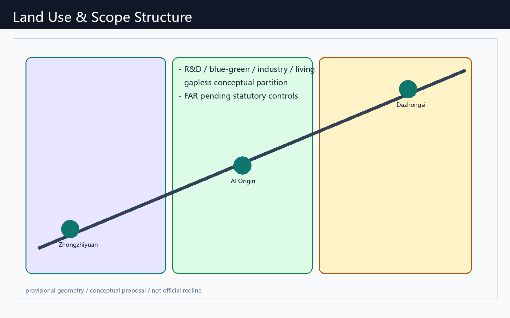
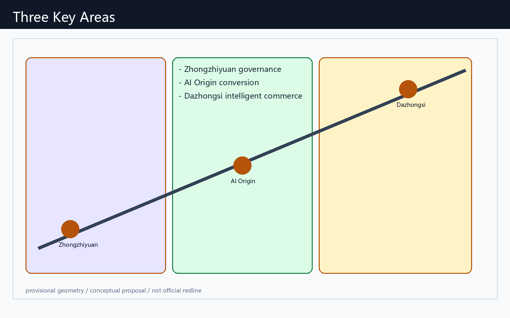
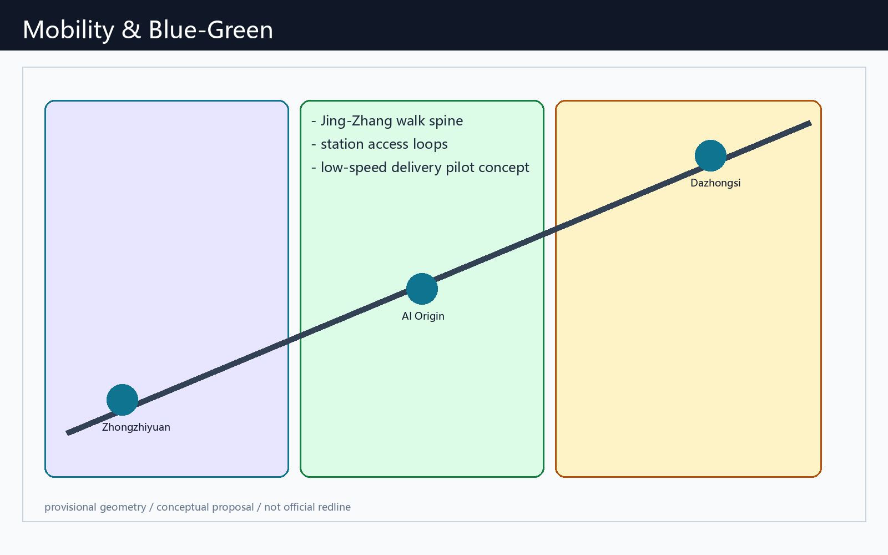
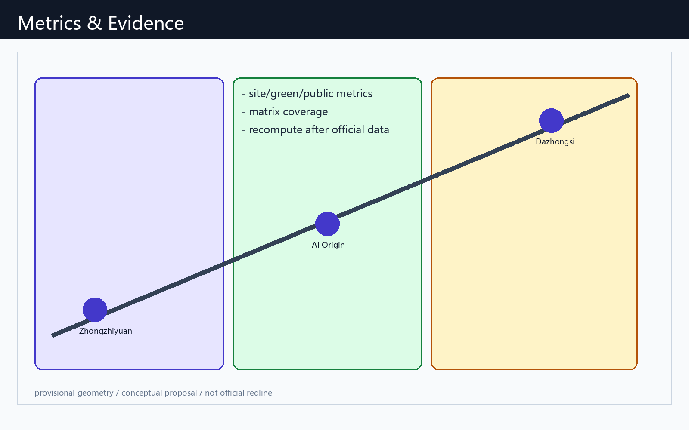

Jing-Zhang AI Living Pilgrimage Corridor
English companion of the Chinese primary proposal. This is a conceptual, provisional-geometry package for professional review and recalculation.
Design Basis and Source List
Official open-call, site package, source registry and agent taskbook. All recommendations are conceptual.

Three-Level Scope Framework
Research area, overall design area and three key detailed areas align the heritage spine, innovation ecosystem and daily AI scenarios.

Coordinated Research Area: Industry and Future City Research
Three cores and two wings link trustworthy AI, open source, enterprise service, public experience and long-term operations.
Overall Design Area: Urban Renewal and Regulatory-Plan-Level Urban Design
Land-use, building, mobility, public-space and phasing layers are reproducible conceptual evidence, not statutory controls.
Detailed Design of Key Areas
Zhongzhiyuan, AI Origin Community and Dazhongsi receive differentiated governance, transfer and intelligent-commerce concepts.

AI Innovation Ecosystem, Personas, and AI+ Scenarios
More than ten scenario cards serve developers, startups, visitors, residents, university communities and public-service operators under human review.
Land Use, Building Scale, and Retain-Renovate-Demolish Strategy
All parcel, FAR, height and ownership decisions await official statutory inputs.
Transport, Rail, Municipal Infrastructure, and Public Services
Walking, station access, regulated low-speed pilots and public-service interfaces are conceptual strategies.

Blue-Green Network, Public Space, and Urban Character
The heritage spine hosts an honor wall, open-source gallery and developer milestone installation.
Renewal Projects, Implementation Policy, and Phasing
Near-term pilots, mid-term interface renewal, and long-term statutory confirmation form the proposed sequence.
Metrics, Area Recalculation, and Compliance Matrix
Known metrics derive from submitted geometry and must be recalculated with official polygons.

Risk, Copyright, and Compliance
Provisional boundary, statutory-control, ownership, heritage and municipal information gaps remain explicit. The package is offline and does not rely on remote resources.
References
See sources.json, metrics.json, matrices, assumptions and the Chinese primary proposal.